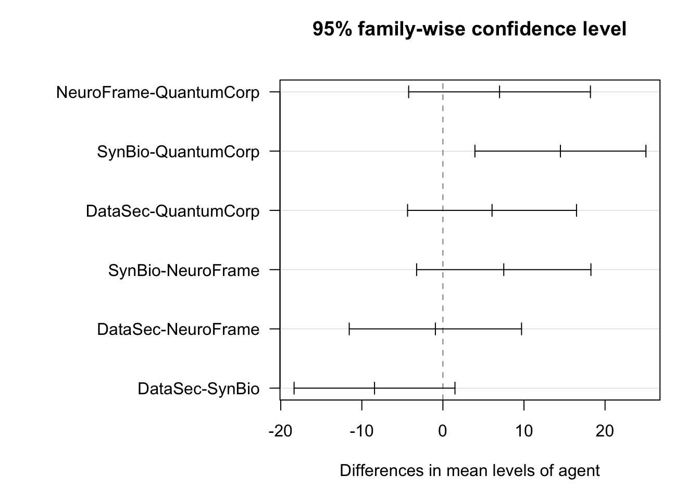
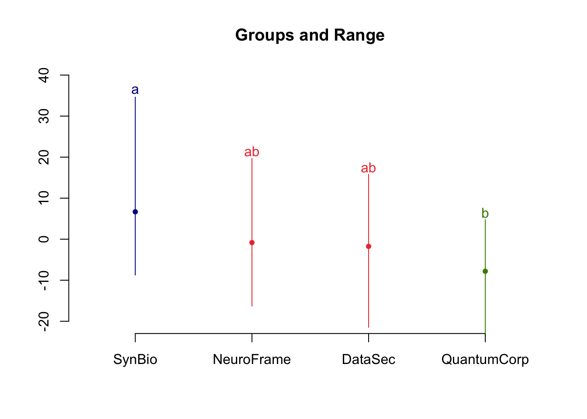

The data arrived without a sender. Clean headers, no metadata. Someone had stripped everything that could identify the source before dropping it into the onion inbox.
Beta opened it at 2 a.m. because she never slept well on Tuesdays. Sixty-six WaszKrak residents, each assigned to one of four corporate agents: QuantumCorp, NeuroFrame, SynBio, DataSec. For every resident, two numbers. A CuriosityScore measured before exposure, a baseline, and another measured after six months of interaction. Curiosity here meant the passive behavioral kind: spontaneous queries, unsolicited searches, contacts initiated outside the recommended feed. The thing the city’s platforms would rather people did less of.
The raw after-scores told her nothing on their own, because residents had started in different places. What mattered was the change, the after-score minus the baseline, one signed number per person. Negative meant the agent had eroded curiosity. Positive meant it had grown. She computed the difference, and drew the box plot before she made coffee.
Three of the four boxes sat below zero. QuantumCorp’s sank the furthest, its median well into negative territory, curiosity worn down by nearly eight points on average across its group. NeuroFrame and DataSec hovered just under the line, barely negative, a point or two of drift. And then there was SynBio, which did not belong in the story she had already started telling herself. SynBio’s box floated above zero. Its residents left the six months more curious than they entered, by better than six points on average. Not a uniform suppression at all. Three agents pressing down at different weights, and one pulling the other way.
“ANOVA?” Bit asked, awake now.
“Four agents, sixty-six people, change in CuriosityScore as the outcome.” She fit it. The F-test came back significant but modest, a p-value a little under one percent, the grouping explaining not quite a fifth of the variation in the drop. Enough to say the agents were not interchangeable. Not enough to say they were all doing the same thing.
“So they’re coordinating,” Bit said, looking at the three negative boxes.
“No.” Beta had been thinking about it for thirty seconds and was already unsure of the neat version. “If they were coordinating, the means would cluster. They don’t. SynBio is going the opposite direction from QuantumCorp entirely. NeuroFrame and DataSec are barely touching it. Different methods, different magnitudes, different signs.” She pulled the group means into a column and stared at them. QuantumCorp at minus eight. SynBio at plus six and a half. A spread of nearly fifteen points between the two extremes, and a muddle in the middle.
Bit sat down slowly. “Then the F-test being significant doesn’t tell you much.”
“It tells me at least one agent differs from the rest. It doesn’t tell me which.” And that was the part that mattered, because a significant F on its own would let a committee say whatever it wanted. She needed to know exactly which pairs of agents were genuinely far apart and which differences were just noise wearing a suit. Was QuantumCorp’s suppression really distinguishable from NeuroFrame’s faint drift, or only from SynBio’s climb? Was SynBio the single true outlier, the one agent doing something categorically different, or was the whole ranking soft enough that most of the pairs could not be told apart at all?
She looked at the four means one more time. The reference the model would pick on its own was QuantumCorp, alphabetically or otherwise the harshest of them. Every other agent would be measured as a distance from that floor. Fine. She wanted those distances, and she wanted them corrected for the fact that comparing four groups means running six comparisons, and six comparisons at five percent each is a trap she had watched better analysts walk into.
“Who sent this?” Bit asked finally.
“Don’t know.” She saved the file and did not close it. First she would ask the data which agents actually stood apart, and hold every pairwise verdict to a standard strict enough to survive the multiplicity. Only then would the shape of what these four corporations were doing, together or, more likely, separately toward the same end, become something she could put in a report.
5.2 The Formula: Introduction to One-Way analysis of variance and Post-Hoc tests
In the case of simple linear regression, we examined the relationship between two quantitative variables. Analysis of variance allows examining the relationship between a quantitative variable and one or more categorical variables, i.e. a variable that takes on several different, usually incomparable, values/categories. Think about a variable describing one’s country of origin, favourite dish or a district.
5.2.1 The Model
In one-way analysis of variance, we consider a model of the relationship between a quantitative variable \(y\) and a single categorical explanatory variable \(x\) taking \(k\) different values. We will also call such an explanatory variable a grouping variable, because its levels define \(k\) groups of observations.
If we denote by \(y_{ij}\) the value of the \(j\)-th observation in the \(i\)-th group, then the analysis of variance model can be written as follows:
where \(\mu_i\) is the mean value of the response variable in group \(i\), \(n_i\) is the number of observations in group \(i\), and \(\sigma^2\) is the variance. We assume that variance is the same in each group.
If the number of observations \(n_i\) is the same in each group, we speak of a balanced design. If \(n_i\) differs for at least two groups, we speak of an unbalanced design. We will present differences between these designs when discussing two-way analysis of variance.
Translating this model into the language of linear models, we will consider a linear model of the form:
\[
y = X \beta + \varepsilon,
\]
in which, for the typcal parameterization, the vector \(\beta = (\mu, \alpha_2, \ldots, \alpha_k)\), and matrix \(X\) is a matrix in which the first column is filled with ones, and the remaining columns are indicators of individual factors.
The parameter vector is \(\beta = (\mu, \alpha_2, \ldots, \alpha_k)\) because we adopted the constraint \(\alpha_1 = 0\). The mean in the first group is described by parameter \(\mu\). This is one of many possible parameterisations, which we will discuss in more detail shortly. It is important to note that we cannot include columns in the model corresponding to each category (each \(\alpha_i\)) and the overall mean (\(\mu\)), because then the columns of matrix \(X\) would be collinear and matrix \(X^TX\) would be non-invertible (see Equation 3.5).
To ilustrate this design, let’s assume we have a set of six observations and two variables, one quantitative \(y\) and another categorical \(x\). Assume that variable \(x\) occurs at three levels: A, B, or C, and the number of occurrences of each level is balanced and equals two. In other words, the variable \(x=c(A, A, B, B, C, C)\) describes three two-element groups.
The formula y~x describes a one-way analysis of variance model with matrix notation:
where \((y_{1,1}, y_{1,2}, y_{2,1}, y_{2,2}, y_{3,1}, y_{3,2})\) is a six-element vector with measurements of trait \(y\), and \((\varepsilon_{1,1}, \varepsilon_{1,2}, \varepsilon_{2,1}, \varepsilon_{2,2}, \varepsilon_{3,1}, \varepsilon_{3,2})\) is a six-element vector corresponding to random disturbance \(\varepsilon \sim \mathcal{N}(0, I_{6\times 6}\sigma^2)\).
5.2.2 It’s all about testing
Analysis of variance, without formal formulation, was already being used in the early 19th century. However, Ronald Fisher is considered the father of this method, who in 1925 published the book “Statistical Methods for Research Workers” (Fisher, 1925) in which he formally formulated and provided many examples of applying analysis of variance. This book was reprinted for over 50 years and became one of the basic textbooks for data analysis in those times.
One of the main issues in analysis of variance is testing the hypothesis of equality of means. The null hypothesis tested in analysis of variance is:
where \(\alpha_i\) is the difference between the mean \(\mu_i\) in the group and the global mean \(\mu\).
To make the description unambiguous, constraints must be imposed on the new parameters. There are \(k+1\) parameters \(\mu\) and \(\alpha_i\) but only \(k\) group means that these parameters describe.
Constraints can be formulated arbitrarily; to facilitate interpretation, the following are most commonly used:
Either the constraint:
\[
\sum_{i=1}^k \alpha_i = 0,
\]
in which the effect \(\mu\) can be treated as the population mean. In the case of an unbalanced design, the mean of all observations is \(\sum_{i=1}^k n_i\mu_i/n\); for a balanced design, the mean is \(\mu=\sum_{i=1}^k \mu_i/k\).
Or the constraint:
\[
\alpha_1 = 0,
\]
used by default in many software packages, where the first group of objects is treated as the reference group, \(\mu\) is the mean in that group, and effects \(\alpha_i\) are differences in means between group \(i\) and the first/reference group.
In R, different parameterizations can be chosen by specifying contrasts. We will discuss this issue in more detail in Section 5.5.
After performing analysis of variance, if we reject the null hypothesis, we accept the alternative hypothesis that at least two means differ. We don’t know which means differ or which is larger. To assess which means differ, post hoc tests are performed in a second step, comparing all pairs of means. We will discuss the issue of post hoc testing with examples in Section 5.2.3.
5.2.3 Post Hoc Tests
If we reject the hypothesis that the means are equal (see Equation 5.2), the next logical step is to determine which means differ. To do this, post-hoc tests are often used post hoc tests1 serve to examine the significance of differences in means between each pair of groups. Several post hoc testing procedures have been proposed; the most popular include:
1 Latin ,,post hoc’’, after the fact
2 We leave this as homework.
Tukey’s HSD Test (Honestly Significant Differences). Tukey’s test is one of the more popular post hoc tests. This test is based on the test statistic determined as the difference between the lowest and highest mean in the considered groups divided by the square root of within-group variance (within-group variance is calculated as the variance of observations \(y_i - \bar{y}_{g(i)}\), where \(\bar{y}_{g(i)}\) is the mean of \(y\) in the group to which observation \(i\) belongs). The value of the test statistic is compared with the \(1-\alpha\) quantile of the studentized range distribution. If we have \(k\) groups of variables with identical distribution \(\mathcal{N}(\mu, \sigma^2)\), each with size \(n\), then Tukey’s distribution describes the distribution of variable \((\hat{\mu}_{max} - \hat{\mu}_{min}) / \sqrt{\hat{\sigma}^2}\). Note that this distribution is constructed for equal-sized groups, so Tukey’s HSD post hoc test should be used exclusively for balanced designs. It’s an error to use this test for unbalanced designs, and simple simulation exercises show that you don’t lose control over Type I error.2
For unequal groups, the Spjøtvoll-Stoline test is sometimes used. An easy alternative would be permutation-based determination of the test statistic distribution that accounts for observed group sizes. Using the studentized range distribution, joint confidence intervals for group means can be determined (see example below).
Student-Newman-Keuls Test. This test has a similar construction to Tukey’s test with one difference. Namely, if we consider \(k\) groups, Tukey’s test for each pair of means uses the same quantile of the studentized range distribution for \(k\) groups. In the Student-Newman-Keuls test, means are first sorted, then if we compare mean \(\hat{\mu}_{1:k}\) (smallest) with \(\hat{\mu}_{k:k}\) (largest), we use the studentized range distribution for \(k\) groups, but for other means, e.g., \(\hat{\mu}_{i:k}\) with \(\hat{\mu}_{j:k}\), we use the studentized distribution for \(|i-j|+1\) groups. This procedure allows finding more differences between means but doesn’t control overall Type I error. Like Tukey’s test, it should be used in balanced designs.
Fisher’s LSD Test (Least Significant Difference). Fisher’s post hoc test performs \(k(k-1)/2\) Student’s t-tests, comparing each pair of means and applying correction for the number of tests performed / multiple testing. For correction, Bonferroni, Holm-Hochberg, and other corrections can be used. Equal group sizes are not assumed here.
Scheffé’s Test is the most conservative test. It resembles Fisher’s LSD test, but testing accounts for all possible contrasts, so this test, despite its conservativeness, is used when “unplanned” contrasts are compared. Equal group sizes are not assumed here.3
3 There are infinitely many total contrasts, but only finitely many linearly independent ones. That’s why we can account for all of them.
Each of these tests has its own advantages and disadvantages. However, so as not to obscure the overall picture of one-way analysis, we will focus on Tukey’s HSD test below.
5.3 The Terminal: No-way, it’s One-way ANOVA
The dataset used in this section comes from the RougeLM package. The curiosity dataset contains 1,200 WaszKrak residents measured on CuriosityScore before and after six months of interaction with one of four corporate AI agents.
head() confirms the structure: each row is one resident, with columns agent (which corporation’s agent they were assigned to), baseline (CuriosityScore before exposure), and after6msc (CuriosityScore after six months). The response variable for the ANOVA is not after6msc directly but the change in CuriosityScore, which requires a preliminary step.
5.3.1 Computing the response variable
Neither baseline nor after6msc alone captures what we want to measure. The question is not what CuriosityScore residents ended up with, it is how much each agent changed it. Residents start with different baseline scores, so comparing after6msc across agents would confound the agent effect with pre-existing differences. The drop variable removes this confound.
The expression curiosity$after6msc - curiosity$baseline performs element-wise subtraction: for each row, the baseline score is subtracted from the six-month score. Negative values indicate a reduction in CuriosityScore, the agent lowered autonomous information-seeking behaviour. Positive values would indicate an increase. The result is stored in a new column drop attached to the curiosity data frame.
5.3.2 Show me the data
The relationship between quantitative and qualitative data is best illustrated using box plots.
Figure 5.1: Distribution of CuriosityScore change (drop = after6msc - baseline) by corporate agent. Each box shows the interquartile range; the horizontal line inside is the median; the whiskers extend to 1.5 times the IQR. Points beyond the whiskers are plotted individually as potential outliers. All four agents produce negative median drops — CuriosityScore fell in every group — but the magnitude differs visibly between agents.
ggplot(curiosity, aes(agent, drop)) initialises the plot with agent on the x-axis and drop on the y-axis. Because agent is a factor, ggplot2 places one box per level automatically.
geom_boxplot() adds the boxplot geometry. With no additional arguments all visual elements, box width, whisker length, outlier shape, use their defaults. The plot is intentionally minimal at this stage: before any formal test, a boxplot is the fastest way to check whether the group distributions overlap substantially, whether variances look roughly equal across groups, and whether any group has an unusual shape.
5.3.3 Group means
The boxplot shows distributions; a summary table shows means. Both information may be helpful before fitting a model.
Table 5.1: A table showing the mean values of the change in curiosity for each possible agent value
The pipe operator |> passes the curiosity data frame to group_by(), which partitions the rows by the levels of agent without changing the data. The result is passed to summarise(), which collapses each group to a single row containing the computed statistic. mean(drop) is evaluated separately within each agent group, producing one mean per agent. The resulting table has one row per level of agent and one column avg_drop.
The table answers the descriptive question, which agent produced the largest average reduction? The ANOVA below answers the inferential question, are these differences larger than would be expected by chance?
5.3.4 Fitting the one-way ANOVA
Do the values observed for different agents differ significantly? We will test this hypothesis using an analysis of variance.
summary(aov(drop ~ agent, data = curiosity))
Df Sum Sq Mean Sq F value Pr(>F)
agent 3 1761 586.9 4.495 0.00643 **
Residuals 62 8094 130.6
---
Signif. codes: 0 '***' 0.001 '**' 0.01 '*' 0.05 '.' 0.1 ' ' 1
Table 5.2: A table showing the analysis of variance for a single variable
aov(drop ~ agent, data = curiosity) fits a one-way analysis of variance model. The formula drop ~ agent specifies drop as the response variable and agent as the single grouping factor. aov() is a wrapper around lm() that organises the output into the familiar ANOVA table format.
summary() applied to an aov object prints the ANOVA table. Reading it row by row (in the following chapters, as we consider more variables, there will also be more rows):
agent row: the between-group component. Df is the number of groups minus one (here 3, because there are four agents). Sum Sq is the between-group sum of squares, measuring how much the group means vary around the grand mean. Mean Sq is Sum Sq / Df. F value is the ratio of the between-group mean square to the residual mean square, large values indicate that group differences are large relative to within-group noise. Pr(>F) is the p-value for the F-test of the null hypothesis that all group means are equal (see Section 3.5.4 for more details).
Residuals row: the within-group component. Df is the total number of observations minus the number of groups. Sum Sq is the total within-group variability — the part of the variance not explained by group membership.
A significant p-value (below the chosen \(\alpha\)) tells us that at least one group mean differs from the others. It does not tell us which groups differ, that requires post-hoc testing.
In our case, the p-value is small (\(0.00643\)), so we will assume that the observed differences are statistically significant.
5.3.5 The design matrix
Before moving to post-hoc tests it is instructive to inspect how R encodes a categorical predictor internally.
head(model.matrix(drop ~ agent, data = curiosity))
Table 5.3: Let’s take a closer look at how this qualitative variable is coded
model.matrix() constructs the design matrix \({X}\) that aov() and lm() use internally. It takes the same formula and data as the model. .
The output reveals R’s default treatment coding (also called dummy coding). One level of agent, the alphabetically first one, is chosen as the reference category and represented by the intercept column of ones. Each remaining level gets its own binary indicator column: 1 if the observation belongs to that level, 0 otherwise. A row with all indicator columns equal to 0 belongs to the reference level.
This encoding has a direct consequence for interpreting lm() output later: each slope coefficient measures the difference between that group’s mean and the reference group’s mean, not the group mean itself.
5.3.6 Pairwise t-tests with multiplicity correction
The ANOVA F-test is significant. Now we ask: which specific pairs of agents differ? There are many ways to do this; one of them is to carry out a t-test for each pair of levels.
Pairwise comparisons using t tests with pooled SD
data: curiosity$drop and curiosity$agent
QuantumCorp NeuroFrame SynBio
NeuroFrame 0.3148 - -
SynBio 0.0035 0.2799 -
DataSec 0.3148 0.8188 0.1420
P value adjustment method: holm
Table 5.4: A series of tests for each pair of agents. Does the change in curiosity differ between these two agents?
pairwise.t.test() performs all pairwise two-sample t-tests between the levels of the grouping variable. Its three arguments are:
First argument: the numeric response vector curiosity$drop.
Second argument: the grouping vector curiosity$agent.
p.adjust.method = "holm": the method used to correct p-values for the multiple comparisons problem. Without correction, running \(k(k-1)/2\) tests at \(\alpha = 0.05\) would produce false positives far more often than 5% of the time. The Holm method is a sequentially rejective procedure that controls the family-wise error rate at level \(\alpha\) while being less conservative than the Bonferroni correction: it adjusts p-values by ordering them and applying decreasing multipliers rather than a single multiplier applied to all.
The output is a lower-triangular matrix of adjusted p-values, one for each pair of agents. Pairs with adjusted p-values below \(\alpha = 0.05\) provide evidence that those two agents differ in their effect on CuriosityScore.
5.3.7 One-way ANOVA using the lm function
If we are only interested in a model with a single qualitative variable, the aov function will be perfectly adequate. However, in the following chapters we will be constructing more complex models, and for this we will need the lm function, which allows us to work with a wider range of models and variables. So let’s see what an analysis of variance looks like when performed using the lm function.
summary(lm(drop ~ agent, data = curiosity))
Call:
lm(formula = drop ~ agent, data = curiosity)
Residuals:
Min 1Q Median 3Q Max
-20.9260 -7.6766 -0.3987 9.2113 27.9394
Coefficients:
Estimate Std. Error t value Pr(>|t|)
(Intercept) -7.814 2.950 -2.649 0.010236 *
agentNeuroFrame 6.987 4.246 1.646 0.104924
agentSynBio 14.495 3.995 3.629 0.000578 ***
agentDataSec 6.061 3.946 1.536 0.129682
---
Signif. codes: 0 '***' 0.001 '**' 0.01 '*' 0.05 '.' 0.1 ' ' 1
Residual standard error: 11.43 on 62 degrees of freedom
Multiple R-squared: 0.1787, Adjusted R-squared: 0.1389
F-statistic: 4.495 on 3 and 62 DF, p-value: 0.006427
Table 5.5: Analysis of variance performed using the lm function
lm(drop ~ agent, data = curiosity) fits exactly the same model as aov(), both perform ordinary least squares on the design matrix produced by model.matrix(). The difference is only in how the output is presented.
In the Coefficients table, (Intercept) is the estimated mean of the reference agent group (remeber \(\mu\)?). Each remaining coefficient, agentNeuroFrame, agentQuantumCorp, agentSynBio, is the estimated difference between that agent’s group mean and the reference group’s mean (remeber \(\alpha_i\)?). A negative coefficient means that agent produced a larger reduction in CuriosityScore than the reference agent; a positive coefficient means a smaller reduction.
The t-tests and p-values in this table test whether each pairwise difference from the reference group is significantly different from zero. This is not a full set of pairwise comparisons, it covers only comparisons involving the reference level. For all pairwise comparisons, post-hoc methods are required.
5.3.8 Tukey’s Honest Significant Difference test
The most popular post-hoc test for testing differences between means is Tukey’s test. We will carry it out twice here, using two different libraries. The results are, of course, the same, but you may find one format easier to read than the other. Let’s start with the one implemented in the stats package.
model_cur_01 <-aov(drop ~ agent, data = curiosity)TukeyHSD(model_cur_01)
Table 5.6: Tukey’s test using the TukeyHSD function from package stats
TukeyHSD() takes a fitted aov object and computes simultaneous confidence intervals and p-values for all pairwise differences between group means. “Honest Significant Difference” refers to the fact that the test controls the family-wise error rate across all comparisons simultaneously, not just pair by pair.
The output table has one row per pair. The columns are:
diff: the estimated difference in group means (second group minus first group in each pair).
lwr and upr: the lower and upper bounds of the 95% simultaneous confidence interval for that difference. If the interval does not include zero, the pair differs significantly at the family-wise level.
p adj: the Tukey-adjusted p-value. Values below \(\alpha = 0.05\) indicate a significant pairwise difference after controlling for multiple comparisons.
Tukey’s method assumes equal group sizes and equal variances. It is the standard choice when both conditions are approximately met and all pairwise comparisons are of interest.
par(mar=c(5, 14, 4, 2))plot(TukeyHSD(model_cur_01), las =1)

Figure 5.2: Tukey HSD 95% simultaneous confidence intervals for all pairwise differences in mean CuriosityScore drop between agents. A confidence interval that does not cross the vertical line at zero indicates a statistically significant difference between that pair. The argument las = 1 rotates all axis labels to horizontal, making the pair labels on the left axis readable.
plot() applied to a TukeyHSD object produces a visualisation of the simultaneous confidence intervals. Each horizontal segment is one pairwise comparison. The argument las = 1 controls axis label orientation: las = 1 forces all labels to be drawn horizontally regardless of which axis they are on, preventing the default vertical rotation of y-axis labels that would make the pair names difficult to read.
5.3.9 Tukey’s Honest Significant Difference test with agricolae package
The agricolae package provides several additional post-hoc procedures, each with different assumptions about error rate control and statistical power. They work on aov object, so let’s create one.
library("agricolae")model_cur_02 <-aov(drop ~ agent, data = curiosity)
model_cur_02 is refitted here for clarity, it is identical to model_cur_01 from Section 5.3.8. All agricolae functions take a fitted aov object, the name of the grouping factor as a character string, and a console argument that controls whether a summary is printed to the console in addition to being returned invisibly.
Study: model_cur_02 ~ "agent"
HSD Test for drop
Mean Square Error: 130.5507
agent, means
drop std r se Min Max Q25 Q50 Q75
DataSec -1.7531579 11.82173 19 2.621276 -21.49 15.83 -11.4600 -2.330 8.6650
NeuroFrame -0.8271429 11.30523 14 3.053694 -16.33 19.70 -8.5025 -1.845 5.2950
QuantumCorp -7.8140000 11.66697 15 2.950149 -28.74 4.75 -15.8350 -3.420 1.9250
SynBio 6.6805556 10.87744 18 2.693105 -8.74 34.62 1.0650 4.855 9.4725
Alpha: 0.05 ; DF Error: 62
Critical Value of Studentized Range: 3.733669
Groups according to probability of means differences and alpha level( 0.05 )
Treatments with the same letter are not significantly different.
drop groups
SynBio 6.6805556 a
NeuroFrame -0.8271429 ab
DataSec -1.7531579 ab
QuantumCorp -7.8140000 b

Figure 5.3: Tukey HSD grouping letters from agricolae::HSD.test(). Groups sharing a letter are not significantly different from each other at the family-wise level. Groups with different letters differ significantly.
HSD.test() performs Tukey’s HSD test and returns a grouping of the levels using compact letter display: groups that share a letter are not significantly different at the chosen \(\alpha\). plot() on the result produces a bar chart of group means with the letter assignments overlaid. This display is more compact than the full pairwise table and is standard in agronomic and biological publications.
In a similar way, one can perform Student-Newman-Keuls test using function SNK.test(), Fisher’s Least Significant Difference test using function LSD.test() and Scheffé’s test using function scheffe.test().
5.4 The Case: Minimum Effective Dose
I’ve come to visit you
The dataset came from the same anonymous source as before. Same stripping of metadata, same clean headers, same feeling that someone on the inside was paying attention.
This time it was narrower. One hundred QuantumCorp users, and instead of an exact interaction count, a single ordered label describing how often each person met the agent: none, once a week, once a day, every hour, all the time. Five levels, twenty users each, climbing from abstinence to saturation. For every user, the same outcome as before, the change in CuriosityScore over six months, one signed number. The dataset was built like a dose-response study, and Beta recognized the shape of the question immediately. Not “does interaction matter” but “how much interaction is enough to make it matter”.
She drew the box plot first. Old habit. And the picture was not a smooth ramp. The “none” group sat almost exactly at zero, no meaningful change, people left alone left unchanged. Then something strange at “once a week”: the group actually dipped slightly below zero, if anything a touch less affected than none, well within the noise. And then, between once a week and once a day, the floor dropped out. “Once a day” leapt to a mean change above twenty-five points. “Every hour” and “all the time” stayed high, seventeen and twenty-five, no real further climb. The effect did not accumulate smoothly with frequency. It switched on.
“There’s a threshold,” Bit said, coffee in hand.
“Somewhere between once a week and once a day,” Beta said. She was already fitting the model. The overall test that the five groups shared a common mean failed hard, an F-statistic near eight on four and ninety-five degrees of freedom, a p-value down in the hundred-thousandths. The groups were not the same. But a global test was blunt; it only said that somewhere among the five levels a difference lived. She needed to locate the step, the exact rung on the ladder where nothing became something.
That was not a job for comparing every group to every other. The levels had an order, and the question had a direction, so she reached for the contrasts built for ordered factors. First the successive differences, each level against the one just below it. Almost every rung was flat: none to once a week, nothing; once a day to every hour, nothing; every hour to all the time, nothing. Exactly one rung blazed. The jump from once a week to once a day carried an estimated swing of about thirty-five points, with a p-value in the millionths. One step, and only one, did all the work.
“Same result from the other side,” she said, running the Helmert version, each level against the running average of everything milder. It agreed. The contrast that first turned significant was the one that brought “once a day” into comparison with the gentle levels beneath it. Below daily use, no cumulative effect worth naming. At daily use and above, a plateau of erosion that did not deepen much no matter how far frequency climbed.
Bit set down his coffee. “They found the minimum effective dose.”
Beta did not answer at once. In pharmacology the minimum effective dose is the smallest quantity that produces a measurable effect, and everything above it buys little except side effects. Here the dose was interaction frequency, the effect was the change in CuriosityScore, and the smallest frequency that produced it sat precisely at daily contact. Not weekly, which felt casual and did nothing. Not hourly, which added nothing beyond daily. Daily. The frequency that feels like checking the news.
“This wasn’t accidental,” she said. “You don’t get a step function this clean by accident. Someone tested the levels and read the same contrasts I just read, and filed the turning point in a methods section under some word that isn’t ‘subtraction’.”
Outside, District 7 was waking reluctantly. Somewhere QuantumCorp’s agents were answering morning questions, helpful and precise, for the users who had been guided to exactly once a day without knowing why. Beta saved the analysis: the ANOVA that said the groups differed, and the ordered contrasts that said where. She had located the step. What remained was to decide which comparisons were worth making at all, because testing every possible contrast would only launder chance into significance, and the only contrast that had ever mattered here was the one that asked when casual became enough.
5.5 The Formula: Analysis of contrasts
Analysis of variance tests the hypothesis that all means are equal and post hoc tests check which means are different. In certain situations, we may be interested in more complex comparisons of specific subgroups or combinations of these means. Contrast analysis will help us with this.
A contrast is a linear function of means \(\mu_i\):
\[
$\psi_j$ = \sum_{i=1}^k c_{ij} \mu_i.
\]
By testing whether a contrast differs from zero, we can verify specific composite hypotheses. Coefficients of a set of contrasts can be presented using a \(k \times m\) matrix where \(m\) is the number of contrasts and \(k\) is the number of coefficients describing each contrast.
In the examples below, we will show the contrasts defined for \(k = 5\) groups with means \(\mu_1, \mu_2, \mu_3, \mu_4, \mu_5\) and grand mean \(\bar{\mu} = \frac{1}{5}\sum_{i=1}^5 \mu_i\), each coding scheme produces a contrast matrix of dimensions \(5 \times 4\). Of course, all these definitions apply to any number of groups.
5.5.1 Treatment (dummy coding)
Used when there is a natural reference group (e.g. a control or placebo) against which all other conditions should be directly compared. Each coefficient answers the question: how much does group j differ from the baseline?
By default the group \(g_1\) is used the reference. The four contrasts are differences relative to \(\mu_1\):
This is the default contrast used by the lm() function, hence the coding shown in Table 5.5.
5.5.2 Helmert
Used when the factor levels have a sequential or cumulative structure, and the research question is whether each new level differs from what came before. Typical in developmental or dose-response studies where you ask: does adding a higher dose change anything?
Contrast \(j\) compares group \(j+1\) to the mean of groups \(1, \ldots, j\):
Each \(\psi_j > 0\) indicates that the next group lies above the running mean of all previous groups. So, testing whether a given contrast differs from zero is a way of checking whether a plateau has already been reached.
Used when the factor levels are equally spaced quantities (doses, time points, intensities) and the goal is to characterise the shape of the response curve rather than compare individual groups. It answers: is the trend linear, or does it bend?
For \(k=5\) equally spaced levels there are four orthogonal polynomials (degrees 1–4). Standard Chebyshev tabulated weights:
A small \(\psi_{\text{quad}}\) alongside a large \(\psi_{\text{lin}}\) suggests the response is nearly linear.
5.5.4 Sum / effects coding
Used when there is no meaningful reference group and the interest lies in how each group deviates from the overall mean, as in balanced ANOVA designs. The intercept becomes the grand mean, making coefficients interpretable as effect sizes relative to the population average.
Last group \(g_5\) as the baseline (weights \(-1\)). Four contrasts:
For \(\mu_1=8,\ \mu_2=10,\ \mu_3=15,\ \mu_4=14,\ \mu_5=20\), grand mean \(\bar{\mu} = 13.4\):
\[\psi_1 = 8 - 13.4 = -5.4\]
\[\psi_2 = 10 - 13.4 = -3.4\]
\[\psi_3 = 15 - 13.4 = 1.6\]
\[\psi_4 = 14 - 13.4 = 0.6\]
5.5.5 General form and estimator variance
Contrasts allow us to compare any combinations of means within groups. In this section, we will show exactly how the test statistic is derived for such a test (still using the example of five groups, but this can be generalised to any number of groups).
For any weight vector \(\mathbf{c} \in \mathbb{R}^5\) satisfying \(\sum_i c_i = 0\):
In this section, we’ll discuss example application of contrasts. For this purpose, we’ll use a dataset illustrating how changes in curiosity depend on the intensity of interactions with agents. The qualitative variable will be the frequency of interactions, which is described by a category, but this time with a specific order. This analysis is modelled on research into effective doses.
In pharmacology, the minimum effective dose (MED) is the smallest dose required to produce a measurable effect. Here the dose is interaction frequency with QuantumCorp’s agent, and the effect is the reduction in CuriosityScore. We’ll see if there’s a limit to the intensity of the interaction with agents.
5.6.1 Contrast functions
Comparing all pairs of means with each other is not always what interests us. In many situations, we want to compare selected means or groups of means with each other. Contrast analysis serves to compare selected groups of means. Procedures for this analysis are available in packages: stats, gmodels, multcomp, and contrast. By default, contrasts determined by the contr.treatment() function from stats are used; i.e. the first group is treated as the reference group.
Below are example contrasts calculated for five group.
Let’s see how the choice of contrast affects the form of matrix \(X\) encoding the categorical variable dose for our data curiosity_quantum.
5.6.2 Show me the data
Let’s see what the dataset looks like.
summary(curiosity_quantum)
drop dose
Min. :-44.70 none :20
1st Qu.: -7.70 once a week :20
Median : 10.75 once a day :20
Mean : 12.11 every hour :20
3rd Qu.: 32.70 all the time:20
Max. : 70.50
Let’s start by calculating the mean body response in each group of administered drug quantity.
# A tibble: 5 × 2
dose avg_drop
<fct> <dbl>
1 none 1.43
2 once a week -9.26
3 once a day 26.0
4 every hour 17.6
5 all the time 24.8
Figure 5.4 shows the distribution of response times for each of the considered groups defined by interaction intensity. What can be noticed from the plot and what we’ll want to verify statistically is the observation that the drop is greater if the frequency of interaction exceeds once a week.
Figure 5.4: Box plot showing the distribution of response depending on the interaction with Agent. For low exposion response is close to 0; for daily exposions and higher, the drop increases. The model we’ll consider assumes that the relationship between dose and response is not linear: if the dose is too small, the Agent has no effect; if we administer too large exposion, it won’t strengthen the Agent’s effect but may cause adverse side effects. We’re therefore looking for the lowest effective dose.
The averages differ, and it also looks as though there is a significant jump between once a week and once a day. But is this a coincidence or a statistically significant difference? Let’s find out by carrying out a contrast analysis.
5.6.3 Contrast analysis
Let’s start by performing one-way analysis of variance; we’ll use the aov() and summary.aov() functions from the stats package below. Let’s see if the drop in curiosity depends on a agent interaction’s dose.
summary(aov(drop~dose, data=curiosity_quantum))
Df Sum Sq Mean Sq F value Pr(>F)
dose 4 19084 4771 7.929 1.47e-05 ***
Residuals 95 57164 602
---
Signif. codes: 0 '***' 0.001 '**' 0.01 '*' 0.05 '.' 0.1 ' ' 1
The p-value is very small; we are justified in stating that means in groups differ significantly statistically. Now we’ll be interested in which means differ. To check this, post hoc tests are performed in the next stage of analyses.
To conduct regression analysis using selected contrasts, the contrasts parameter should be specified in the lm() or aov() function. Contrasts can be specified independently for each categorical variable. The contrasts parameter should point to a list whose field names correspond to the names of categorical variables appearing in the model.
One-way analysis of variance, default contrasts
summary(lm(drop ~ dose, data=curiosity_quantum))
Call:
lm(formula = drop ~ dose, data = curiosity_quantum)
Residuals:
Min 1Q Median 3Q Max
-60.08 -18.49 2.77 14.53 59.97
Coefficients:
Estimate Std. Error t value Pr(>|t|)
(Intercept) 1.430 5.485 0.261 0.79488
doseonce a week -10.695 7.757 -1.379 0.17121
doseonce a day 24.545 7.757 3.164 0.00209 **
doseevery hour 16.200 7.757 2.088 0.03944 *
doseall the time 23.350 7.757 3.010 0.00334 **
---
Signif. codes: 0 '***' 0.001 '**' 0.01 '*' 0.05 '.' 0.1 ' ' 1
Residual standard error: 24.53 on 95 degrees of freedom
Multiple R-squared: 0.2503, Adjusted R-squared: 0.2187
F-statistic: 7.929 on 4 and 95 DF, p-value: 1.471e-05
The reference point chosen is the dose="none" value. From the above results, we can read that response in the group that received a "once a week" dose does not differ significantly from the none; in groups with a larger dose, response is already significantly different from the none group.
What about other contrasts? One-way analysis of variance, successive difference contrasts
Call:
lm(formula = drop ~ dose, data = curiosity_quantum, contrasts = list(dose = scontr))
Residuals:
Min 1Q Median 3Q Max
-60.08 -18.49 2.77 14.53 59.97
Coefficients:
Estimate Std. Error t value Pr(>|t|)
(Intercept) 12.110 2.453 4.937 3.39e-06 ***
dose2-1 -10.695 7.757 -1.379 0.171
dose3-2 35.240 7.757 4.543 1.63e-05 ***
dose4-3 -8.345 7.757 -1.076 0.285
dose5-4 7.150 7.757 0.922 0.359
---
Signif. codes: 0 '***' 0.001 '**' 0.01 '*' 0.05 '.' 0.1 ' ' 1
Residual standard error: 24.53 on 95 degrees of freedom
Multiple R-squared: 0.2503, Adjusted R-squared: 0.2187
F-statistic: 7.929 on 4 and 95 DF, p-value: 1.471e-05
In this case, we compared response in the group "none" with "once a week" and higher (it turns out the difference is not significantly different, p-value is close to \(0.171\)). Next, we compared groups up to "once a week" to "once a day" and higher (here the difference is significant, \(p = 0.0000163\)), then up to "once a day" against "every hour" and higher (difference not that significant) and so on.
Call:
lm(formula = drop ~ dose, data = curiosity_quantum, contrasts = list(dose = scontr))
Residuals:
Min 1Q Median 3Q Max
-60.08 -18.49 2.77 14.53 59.97
Coefficients:
Estimate Std. Error t value Pr(>|t|)
(Intercept) 12.110 2.453 4.937 3.39e-06 ***
dose1 -5.348 3.879 -1.379 0.1712
dose2 9.964 2.239 4.450 2.34e-05 ***
dose3 2.896 1.583 1.829 0.0706 .
dose4 3.167 1.227 2.583 0.0113 *
---
Signif. codes: 0 '***' 0.001 '**' 0.01 '*' 0.05 '.' 0.1 ' ' 1
Residual standard error: 24.53 on 95 degrees of freedom
Multiple R-squared: 0.2503, Adjusted R-squared: 0.2187
F-statistic: 7.929 on 4 and 95 DF, p-value: 1.471e-05
Here, contrasts are tested against a specific value versus the next group. However, the results are consistent with consecutive differences. Clearly, there is a turning point between "once a week" to "once a day".
Of course, in real-world analyses, it makes no sense to examine all possible contrasts; one needs to consider which contrasts are relevant in a given situation. In our case, we were looking for a turning point, so Helmert and sdiff were the natural choice.
5.7 Exercises
5.7.1 Exercise 1: Reading the ANOVA table
Beta has fitted the following one-way ANOVA to the curiosity dataset:
curiosity$drop <- curiosity$after6msc - curiosity$baselinesummary(aov(drop ~ agent, data = curiosity))
The output shows:
Df Sum Sq Mean Sq F value Pr(>F)
agent 3 1761 586.9 4.495 0.00643
Residuals 62 8094 130.6
(a) How many groups does the agent variable have? How do you read this from the Df column of the agent row? Using the Residuals degrees of freedom, how many residents are in the dataset in total?
(b) The F-statistic is 4.495. Write down the null and alternative hypotheses being tested. What does rejecting the null hypothesis tell us, and what does it not tell us? In particular, can you conclude from this table alone that any specific agent (for example SynBio) differs from any other?
(c) Compute the total sum of squares \(SS_{\text{total}} = SS_{\text{agent}} + SS_{\text{residuals}}\). What proportion of the total variability in drop is explained by the agent grouping? Confirm that this proportion matches the Multiple R-squared (approximately 0.18) reported by summary(lm(drop ~ agent, data = curiosity)).
5.7.2 Exercise 2: Design matrix and reference group
head(model.matrix(drop ~ agent, data = curiosity))summary(lm(drop ~ agent, data = curiosity))
(a) Run head(model.matrix(drop ~ agent, data = curiosity)). Which agent is the reference group? How can you tell from the design matrix?
(b) In the output of summary(lm(drop ~ agent, data = curiosity)), the (Intercept) estimate is approximately \(-6.0\). What does this number represent substantively — that is, what is it an estimate of?
(c) The coefficient for agentQuantumCorp is approximately \(-11.0\). Using the intercept from point (b), compute the estimated mean drop for QuantumCorp users. Verify your answer against the group means table from group_by(agent) |> summarise(mean(drop)).
(d) Change the reference group to "QuantumCorp" by relevelling the factor and refit the model:
curiosity$agent <-relevel(curiosity$agent, ref ="QuantumCorp")summary(lm(drop ~ agent, data = curiosity))
Which coefficients change and which stay the same? Does the F-statistic from anova() change?
5.7.3 Exercise 3: Post-hoc comparisons
The ANOVA F-test is significant. Beta now wants to know which specific pairs of agents differ.
(a) Run pairwise.t.test(curiosity$drop, curiosity$agent, p.adjust.method = "holm"). How many pairwise comparisons are performed? Write down the formula for the number of pairs as a function of the number of groups \(k\).
(b) Rerun the same test with p.adjust.method = "bonferroni" and with p.adjust.method = "none". For at least one pair of agents, compare the three p-values. Which method is the most conservative? Which is the most liberal? In the WaszKrak context, where the results may be used to make a legal claim against a corporation, which method would you argue for and why?
(c) Run TukeyHSD(aov(drop ~ agent, data = curiosity)). Identify all pairs where the 95% confidence interval for the difference does not include zero. Are these the same pairs flagged as significant by pairwise.t.test() with Holm correction?
5.7.4 Exercise 4: Contrasts and the minimum effective dose
This exercise uses the curiosity_quantum dataset, where dose is an ordered factor with five levels: "none", "once a week", "once a day", "every hour", "every minute".
(a) Fit a one-way ANOVA using aov(drop ~ dose, data = curiosity_quantum). Is the overall F-test significant? What does this tell you about the effect of interaction frequency on CuriosityScore?
(b) Fit the model with successive difference contrasts:
Which adjacent pair of dose levels shows the largest and most significant difference? Does this match the breakpoint identified in The Case: Minimum Effective Dose?
The second Helmert contrast compares "once a day" against the mean of all lower dose groups. Is this contrast significant? Interpret the result in substantive terms: what does it say about the minimum effective dose?
Fisher, R. A. (1925). Statistical methods for research workers. Edinburgh Oliver & Boyd.